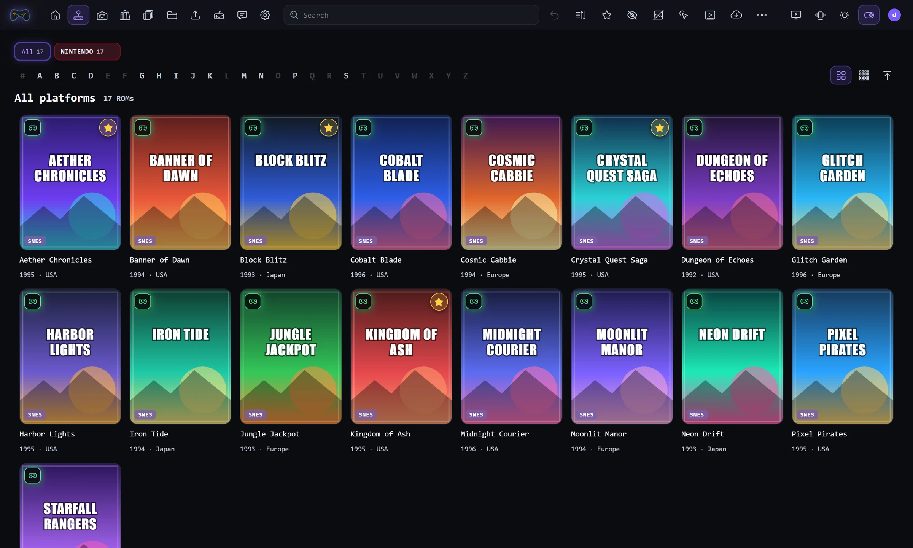

就地扫描你的文件夹
只需指向你已有的文件夹。文件就在原位置建立目录，绝不会被移动、重命名或删除，单个有问题的文件也不会中断扫描。
免费 · 开源 · 自托管
game-sauce 会为你拥有的游戏建立目录、获取封面，让许多游戏直接在浏览器中运行，其余的则用你电脑上的模拟器启动，还能通过用手柄操作的大屏幕模式把整个游戏库搬到电视上。
Windows · macOS（Apple 芯片）· Linux · Docker、Unraid 和 Proxmox · 树莓派

截图使用内置的演示数据和生成的封面。
全家的游戏库集中在一处，运行在你自己掌控的机器上。
只需指向你已有的文件夹。文件就在原位置建立目录，绝不会被移动、重命名或删除，单个有问题的文件也不会中断扫描。
使用你自己的账户，从 ScreenScraper、TheGamesDB、IGDB 和 SteamGridDB 获取封面、简介、年份等信息，也可以从文件夹导入图片或上传你自己的。
许多较老的主机可以直接在网页中运行，即时存档和游戏内存档按人保存在你的服务器上。“继续游玩”一栏会记住你玩到了哪里。
只需一次点击，就能在你自己电脑上安装的模拟器（如 RetroArch、MAME 或 Dolphin）中启动游戏。游戏可以保留以便快速重新启动，还有一个设置页面来配置每个模拟器。
为沙发准备的全屏手柄操作视图：带有徽标和横幅的游戏转盘、收藏和合集、A 到 Z 字母条、屏幕上的说明书，还有可以静音的声音。
收藏、私人合集和隐藏的游戏，以及为你信任的人准备的账户，包括没有下载和管理权限的仅游玩账户。用户之间可以互发私信，管理员也可以向所有人发布通知。
对照 No-Intro 和 Redump DAT 校验转储，找出重复版本并推荐最值得保留的副本，清理未使用的图片文件，而不会删除你的游戏。
导入你的 Steam 游戏库及游玩时长，并通过列表导入你的 PlayStation、任天堂和 Xbox 游戏。你实际拥有的光盘和卡带也可以记录，全都与你的 ROM 放在一起。
无需账号，无需订阅，没有云端。你的游戏库和数据都留在你自己的硬件上，数据库可以在应用中备份和恢复。
来自内置演示游戏库的两段短片。
专为手柄和沙发设计的全屏视图。在游戏库中一键打开，再让浏览器或桌面应用在电视上全屏显示。


全屏的封面架，排成柔和的弧形。选择一个系列和平台，用方向键、鼠标滚轮、滑动或手柄滚动，然后按下开始游戏。
把你真实游戏架上的盒装游戏记录下来，可以手动添加或从列表导入，与你的数字收藏放在一起。每个人都有自己的游戏架。
服务器上的用户之间可以互发私信，管理员也可以发布通知。一切都不会离开你自己的机器。

经典和现代两种外观，浅色和深色两种主题。同一个游戏库，由你选择。


不附带。game-sauce 是用来管理你自己拥有的游戏的。它不包含也不提供游戏或 BIOS 文件，也不会替你下载游戏：你需要自带收藏。游玩方面，浏览器游玩由开源模拟器 EmulatorJS 提供，点击“开始游戏”时浏览器会加载它。在电脑上游玩时，“模拟器”页面会推荐模拟器并提供获取链接，启动器则会启动你自己安装的模拟器。
是的。它以 MIT 许可开源。无需创建账号，没有订阅，也没有任何追踪。有些元数据数据源要求你注册自己的免费账户才能使用其服务。
许多不需要 BIOS 的老主机可以直接在网页中运行。较新的系统，以及任何超出浏览器能力的游戏，则会通过启动器在你电脑上的模拟器中运行。
在你指定的文件夹里不会。它直接读取原位置的文件，绝不会移动、重命名或删除其中的文件。清理工具只会处理图片以及 game-sauce 自己存储的文件。
可以。为你信任的人创建账户即可。合集仅对创建者本人可见，仅游玩账户只能看到可在浏览器中游玩的游戏。
请在 GitHub 上提交 issue 或发起讨论，或发邮件到 hello@gamesauce.app。设置中的“系统健康状况”页面可以生成一份可复制粘贴的报告，其中不含任何机密信息。
game-sauce 是免费开源的。如果它对你有用，可以请我喝杯咖啡。这能让我有更多时间开发新功能、在 Windows、Mac 和 Linux 上测试，并回答大家的问题。